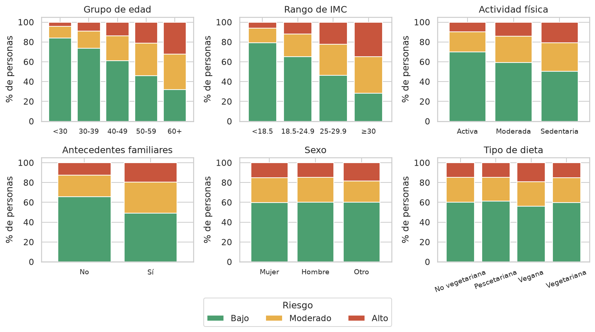
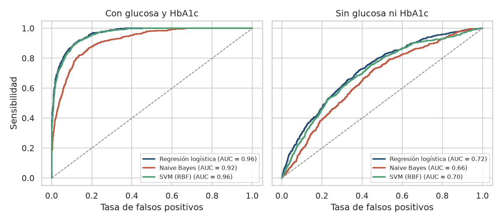
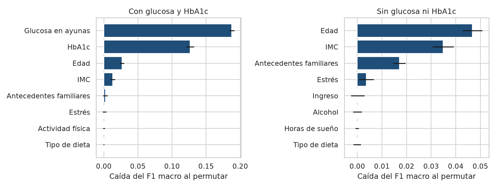
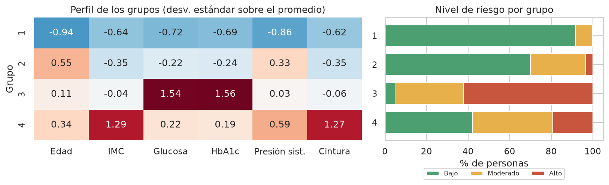

Yago Raúl Huerta Orozco
Diplomado de Minería de Datos y Técnicas Estadísticas, Módulo 3 · FES Acatlán, UNAM
La diabetes es una enfermedad crónica frecuente cuya detección oportuna tiene alto valor para la salud pública. Este trabajo describe la distribución del riesgo de diabetes (bajo, moderado y alto) en 15,000 adultos de un conjunto de datos sintético y determina qué factores demográficos, de estilo de vida y clínicos se asocian con un riesgo mayor. Tras un análisis descriptivo, se compararon tres modelos de clasificación (regresión logística multinomial, Naive Bayes y máquinas de soporte vectorial) con una partición 70/30 y validación cruzada de cinco pliegues, con y sin la glucosa en ayunas y la hemoglobina glucosilada (HbA1c), y se segmentó a los pacientes con K-Means a partir de seis variables clínicas. Con todas las variables, la regresión logística y la SVM alcanzaron un AUC de 0.91 (exactitud de 0.76 y 0.75) y Naive Bayes de 0.87; sin glucosa ni HbA1c los tres modelos cayeron a un AUC de 0.65-0.69 y una exactitud cercana a 0.52, con edad, índice de masa corporal (IMC) y antecedentes familiares como únicos factores relevantes. K-Means con cuatro grupos separó perfiles clínicos coherentes con el riesgo, aunque traslapados (silhouette de 0.20). Los datos son sintéticos y observacionales, por lo que los resultados son asociaciones con fines académicos.
Palabras clave: diabetes, factores de riesgo, clasificación, regresión logística, K-Means.
La diabetes es una enfermedad crónica que afecta a una proporción creciente de la población. Según la Organización Mundial de la Salud (OMS), el número de personas con diabetes pasó de 200 millones en 1990 a 830 millones en 2022, y más de la mitad no recibía medicación para tratarla (World Health Organization [WHO], 2024). Puede provocar infarto, enfermedad renal, pérdida de la visión y amputaciones, y en la diabetes tipo 2 el sobrepeso, la falta de actividad física, la edad y los antecedentes familiares aumentan el riesgo (WHO, 2024). En la práctica clínica el diagnóstico se apoya en mediciones de laboratorio: la Asociación Americana de Diabetes establece como criterios una glucosa en ayunas de 126 mg/dl o más y una hemoglobina glucosilada (HbA1c) de 6.5 % o más (American Diabetes Association Professional Practice Committee [ADA], 2024).
Desde la minería de datos, estimar el nivel de riesgo de una persona es un problema de clasificación supervisada, en el que además interesa saber qué variables aportan más a la predicción (Géron, 2019; James et al., 2013). La regresión logística ofrece coeficientes interpretables como razones de momios; Naive Bayes y las máquinas de soporte vectorial (SVM) permiten contrastar el desempeño con supuestos distintos. Como complemento no supervisado, el agrupamiento con K-Means permite preguntar si existen perfiles de pacientes con características clínicas parecidas y cómo se reparte el riesgo entre ellos.
Este trabajo busca responder: ¿cómo se distribuye el riesgo de diabetes en la población adulta del conjunto de datos y qué factores demográficos, de estilo de vida y clínicos se asocian con un riesgo mayor? Los objetivos son (a) describir la población y las asociaciones con el riesgo, (b) comparar tres técnicas de clasificación en capacidad predictiva e interpretabilidad, evaluando cuánto del desempeño depende de la glucosa y la HbA1c, y (c) identificar perfiles de pacientes con K-Means. Al tratarse de datos observacionales, se habla de factores asociados y no de causas.
2.1 Materiales. Se utilizó el conjunto Diabetes Risk Prediction (Aggarwal, s. f.), disponible en Kaggle como diabetes_risk.csv (1.54 MB), de carácter sintético y de uso académico. Contiene 15,000 registros sin duplicados y 19 columnas: un identificador, 17 variables predictoras y la respuesta diabetes_risk, categórica ordinal con tres niveles (bajo 60 %, moderado 25 % y alto 15 %). Las predictoras categóricas son sexo, ciudad (18 ciudades de la India), antecedentes familiares, actividad física, tipo de dieta, tabaquismo, consumo de alcohol e ingreso; las numéricas son edad, IMC, horas de sueño, estrés (1 a 10), glucosa en ayunas, HbA1c, presión sistólica y diastólica y circunferencia de cintura. Faltan datos en alcohol (25.3 %), tabaquismo (3.1 %) e ingreso (3.1 %). El análisis se hizo en Python con pandas, SciPy y scikit-learn (Pedregosa et al., 2011); el código se entrega en un cuaderno de Jupyter.
2.2 Métodos. Preprocesamiento. Se descartó el identificador y los faltantes se trataron como una categoría «sin dato», porque su proporción no difiere entre los niveles de riesgo (p > 0.05, prueba chi-cuadrada). Las variables categóricas se codificaron con one-hot y las numéricas se estandarizaron, ambos pasos dentro de un pipeline ajustado solo con el conjunto de entrenamiento para evitar fuga de información. Análisis descriptivo. Se calculó el nivel de riesgo por grupos de edad, IMC, sexo, dieta, actividad física y antecedentes, y se probó su asociación con la prueba chi-cuadrada (categóricas) y de Kruskal-Wallis (numéricas). Clasificación. Se dividieron los datos en 70 % para entrenamiento y 30 % para prueba, de forma estratificada y con semilla fija (42), y se ajustaron una regresión logística multinomial, Naive Bayes gaussiano y una SVM con núcleo radial, con ponderación de clases por el desbalance. Como la glucosa y la HbA1c son indicadores muy ligados al diagnóstico y podrían definir casi por completo la etiqueta en datos sintéticos, cada modelo se ajustó con y sin ellas. Se reportan exactitud, precisión, sensibilidad y F1 (promedio macro), AUC uno contra el resto, matrices de confusión, validación cruzada estratificada de cinco pliegues, una versión binaria (riesgo alto frente al resto), razones de momios de la logística binaria e importancia por permutación. Segmentación. Se aplicó K-Means a seis variables clínicas estandarizadas (edad, IMC, glucosa, HbA1c, presión sistólica y cintura), sin usar la etiqueta. El número de grupos se exploró con el método del codo y el coeficiente de silhouette (Rousseeuw, 1987) para k de 2 a 8, y los grupos se describieron con sus medias y su distribución de riesgo.
Las variables más asociadas con el riesgo fueron la glucosa en ayunas (media de 148 mg/dl en riesgo bajo y 226 en alto) y la HbA1c (6.4 % y 8.1 %), seguidas de edad, IMC, cintura, actividad física y antecedentes familiares (todas con p < 0.001). Sexo, tipo de dieta, tabaquismo y consumo de alcohol no mostraron asociación (p > 0.3). Como muestra la Figura 1, el riesgo alto crece con la edad (4.1 % en menores de 30 años y 32.4 % en mayores de 60) y con el IMC (5.9 % con bajo peso y 34.7 % con obesidad); es de 21.0 % en personas sedentarias frente a 9.8 % en activas, y de 19.7 % con antecedentes familiares frente a 12.5 % sin ellos. La glucosa y la HbA1c correlacionan 0.91.

La Tabla 1 resume el desempeño en el conjunto de prueba. Con todas las variables, la regresión logística y la SVM rinden prácticamente igual (exactitud de 0.76 y 0.75; AUC de 0.91) y Naive Bayes es el más débil (0.72 y 0.87), algo esperable porque su supuesto de independencia no se cumple con dos variables correlacionadas en 0.91. La validación cruzada confirma el orden con desviaciones estándar de a lo sumo 0.014. Al quitar la glucosa y la HbA1c los tres modelos se desploman: la exactitud baja a cerca de 0.52 y el AUC a 0.65-0.69. En la versión binaria ocurre lo mismo: la logística pasa de un AUC de 0.96 (sensibilidad de 0.88, precisión de 0.59) a 0.72 (precisión de 0.26). Con las mediciones clínicas, los errores son casi siempre hacia la clase vecina y prácticamente nunca se confunde riesgo bajo con alto; sin ellas el modelo acierta solo 27 % de los casos moderados.
| Modelo | Exactitud | F1 macro | AUC (3 clases) | AUC (alto vs. resto) | Exactitud CV |
|---|---|---|---|---|---|
| Con glucosa y HbA1c | |||||
| Regresión logística | 0.761 | 0.729 | 0.906 | 0.964 | 0.768 ± 0.007 |
| Naive Bayes | 0.720 | 0.669 | 0.867 | 0.925 | 0.733 ± 0.009 |
| SVM (RBF) | 0.750 | 0.721 | 0.905 | 0.956 | 0.762 ± 0.006 |
| Sin glucosa ni HbA1c | |||||
| Regresión logística | 0.520 | 0.443 | 0.691 | 0.724 | 0.523 ± 0.014 |
| Naive Bayes | 0.526 | 0.430 | 0.645 | 0.670 | 0.541 ± 0.011 |
| SVM (RBF) | 0.527 | 0.449 | 0.688 | 0.690 | 0.531 ± 0.012 |

Las razones de momios de la logística binaria van en el mismo sentido. Con todas las variables, un aumento de una desviación estándar en la glucosa multiplica los momios de riesgo alto por 9.3 y en la HbA1c por 5.7. Sin ellas, la edad (1.67 por desviación estándar) y el IMC (1.56) son los factores principales, y tener antecedentes familiares equivale a unos 1.7 veces los momios (la razón de no tenerlos es 0.59). La importancia por permutación (Figura 3) coincide: la glucosa (0.19 de caída del F1) y la HbA1c (0.13) dominan; sin ellas, la edad (0.05), el IMC (0.03) y los antecedentes (0.02). La actividad física, asociada con el riesgo por sí sola, aporta poco una vez que se consideran el IMC y la edad.

La inercia disminuye sin un codo marcado y la silhouette es máxima en k = 2 (0.26) y baja a 0.20 en k = 4, lo que indica que los datos forman un continuo más que grupos separados. Se eligió k = 4 por ser el menor número de grupos que separa perfiles clínicamente distintos (Tabla 2, Figura 4); la silhouette es de 0.195 y el índice de Davies-Bouldin de 1.43. El grupo 1 reúne a personas jóvenes sin alteraciones (91.5 % de riesgo bajo); el grupo 2, a personas mayores con presión elevada y valores metabólicos cercanos al promedio; el grupo 3 se distingue casi solo por glucosa y HbA1c altas y concentra el riesgo alto (62.3 %); y el grupo 4 por obesidad abdominal (IMC de 28.3 y cintura de 114 cm), con 62.2 % de sedentarios y riesgo repartido entre los tres niveles.
| Grupo | n (%) | Edad | IMC | Glucosa | HbA1c | Presión sist. | Cintura | % bajo | % mod. | % alto |
|---|---|---|---|---|---|---|---|---|---|---|
| 1 Jóvenes sin alteraciones | 4,370 (29.1) | 34.6 | 20.5 | 141.2 | 6.3 | 128.6 | 93.5 | 91.5 | 8.2 | 0.3 |
| 2 Mayores, presión elevada | 4,836 (32.2) | 50.0 | 21.7 | 160.2 | 6.7 | 143.7 | 96.5 | 69.9 | 26.8 | 3.3 |
| 3 Glucemia alta | 2,235 (14.9) | 45.5 | 22.9 | 228.0 | 8.2 | 139.9 | 99.6 | 5.3 | 32.4 | 62.3 |
| 4 Obesidad abdominal | 3,559 (23.7) | 47.8 | 28.3 | 177.2 | 7.0 | 147.0 | 113.9 | 42.2 | 38.6 | 19.3 |

El hallazgo principal es que la predicción del riesgo depende casi por completo de la glucosa en ayunas y la HbA1c: con ellas, la regresión logística y la SVM alcanzan un AUC de 0.91 y sin ellas apenas 0.69, con cualquiera de los tres modelos. Esto es coherente con que ambas sean los criterios diagnósticos de la enfermedad (ADA, 2024), pero también sugiere que la etiqueta fue construida a partir de ellas: en estos datos el 87 % de las personas supera los 126 mg/dl de glucosa y el 69 % las 6.5 % de HbA1c, proporciones que no corresponden a una población general y que reflejan el origen sintético. Por ello, el desempeño con las mediciones clínicas probablemente es optimista y no debe leerse como capacidad real de detección. Entre las variables de hábitos y rasgos, solo la edad, el IMC y los antecedentes familiares conservan señal; la actividad física se asocia con el riesgo, pero su efecto parece pasar por el IMC, y sexo, dieta, tabaquismo y alcohol no se asocian.
En cuanto a los modelos, la regresión logística iguala a la SVM y es más fácil de interpretar, por lo que resulta la opción preferible; Naive Bayes queda atrás por la fuerte correlación entre glucosa y HbA1c. K-Means complementa la clasificación: sin usar la etiqueta, encuentra perfiles clínicos que se alinean con el riesgo (en particular, un grupo de glucemia alta con 62 % de riesgo alto y uno de obesidad abdominal y sedentarismo), aunque la silhouette baja indica que los grupos se traslapan y deben tomarse como tendencias.
Las principales limitaciones son el carácter sintético y observacional de los datos (los resultados indican asociaciones, no causalidad ni valor clínico), el 25 % de datos faltantes de alcohol y la ausencia de una validación externa. Como trabajo futuro, convendría repetir el análisis con datos reales y comparar con modelos que traten de forma ordinal la respuesta. En síntesis, en estos datos el riesgo se explica sobre todo por la glucosa y la HbA1c, y, de entre los demás factores, vigilar la edad, el peso y los antecedentes familiares es lo más informativo.
Aggarwal, M. (s. f.). Diabetes risk prediction [Conjunto de datos]. Kaggle. https://www.kaggle.com/datasets/mansiaggarwal88/diabetes-risk-prediction
American Diabetes Association Professional Practice Committee. (2024). 2. Diagnosis and classification of diabetes: Standards of care in diabetes—2024. Diabetes Care, 47(Supl. 1), S20–S42. https://doi.org/10.2337/dc24-S002
Géron, A. (2019). Hands-on machine learning with Scikit-Learn, Keras, and TensorFlow (2.ª ed.). O'Reilly Media.
James, G., Witten, D., Hastie, T., & Tibshirani, R. (2013). An introduction to statistical learning: With applications in R. Springer.
Pedregosa, F., Varoquaux, G., Gramfort, A., Michel, V., Thirion, B., Grisel, O., Blondel, M., Prettenhofer, P., Weiss, R., Dubourg, V., Vanderplas, J., Passos, A., Cournapeau, D., Brucher, M., Perrot, M., & Duchesnay, É. (2011). Scikit-learn: Machine learning in Python. Journal of Machine Learning Research, 12, 2825–2830.
Rousseeuw, P. J. (1987). Silhouettes: A graphical aid to the interpretation and validation of cluster analysis. Journal of Computational and Applied Mathematics, 20, 53–65. https://doi.org/10.1016/0377-0427(87)90125-7
World Health Organization. (2024, 14 de noviembre). Diabetes [Hoja informativa]. https://www.who.int/news-room/fact-sheets/detail/diabetes